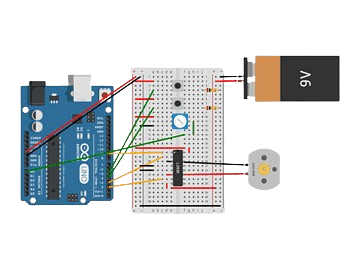

📑Componentes de Tinkercad

Tinkercad es una herramienta digital gratuita apta para todos los usuarios, enfocada en la creación de animación virtual 3D y simulación de circuitos. Esas animaciones virtuales ya no sólo se centran en la creación de contenido audiovisual para películas y cortos, sino que cada vez más entran con más fuerza en sectores tan diversos como la arquitectura, la ingeniería o la medicina.
En el ámbito educativo se considera que en contextos tecnológicos educativos es relevante enfocarse en diseñar el espacio experiencial de aprendizaje en todas las dimensiones posibles, las Tecnologías de Información y Comunicación (TIC) de esta manera esta herramienta ayuda al estudiantado a desaprender y aprender de una forma en la que no tienen temor de cometer errores con placas de Arduino y pueden tener el acceso a circuitos, conexiones y programar las placas.
Tinkercad es una herramienta digital gratuita apta para todos los usuarios, enfocada en la creación de animación virtual 3D y simulación de circuitos. Esas animaciones virtuales ya no sólo se centran en la creación de contenido audiovisual para películas y cortos, sino que cada vez más entran con más fuerza en sectores tan diversos como la arquitectura, la ingeniería o la medicina.
En el ámbito educativo se considera que en contextos tecnológicos educativos es relevante enfocarse en diseñar el espacio experiencial de aprendizaje en todas las dimensiones posibles, las Tecnologías de Información y Comunicación (TIC) de esta manera esta herramienta ayuda al estudiantado a desaprender y aprender de una forma en la que no tienen temor de cometer errores con placas de Arduino y pueden tener el acceso a circuitos, conexiones y programar las placas.